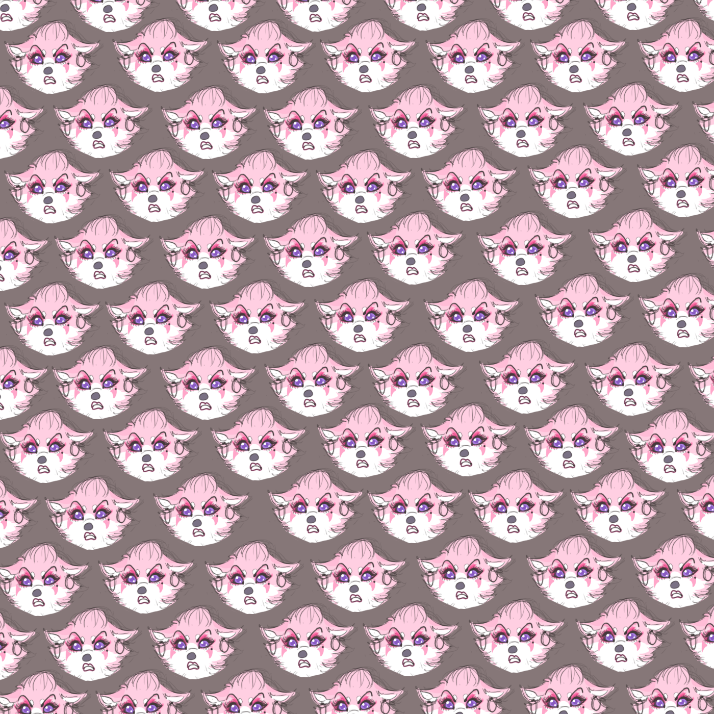

Erf's Peso/2011
I think it all snowballed from this hilarious pattern Erf had made years before, completely unrelated of her character's "cholafied" mug arranged in a stark grid staring down the viewer:
Clas: I'm being paid in digital hay-pesosSome time ago, my pals Vekke (Antonia)and Erf (Stephanie)--or more correctly Elf"--and I had the idea for our characters to be in a mariachi band together, "Los Burritos del Norte" we called ourselves.
Clas: that's like, negative money
I think it all snowballed from this hilarious pattern Erf had made years before, completely unrelated of her character's "cholafied" mug arranged in a stark grid staring down the viewer:
This is a little pattern I whipped up with intention of making matching ones for Vekke and myself. They'd feature our characters and another kitschy element of Mexicana—I think Vekke chose a charango (armadillo-guitar)— to coordinate our tumblogs. For better or worse our project never made it past brainstorming. Steph lucked out and got a pattern because because I happened to be mailing her a tiny painting of Erf I did on a scrap of aquarium paper and thought a custom patterned envelope would be a cute surprise:
"All up in da hood, G"
Imagine finding Elf at the end of a rainbow with a fat sack of digital hay-pesos. Would you smile? Frown? It's a tough call and there's plenty reason for either.